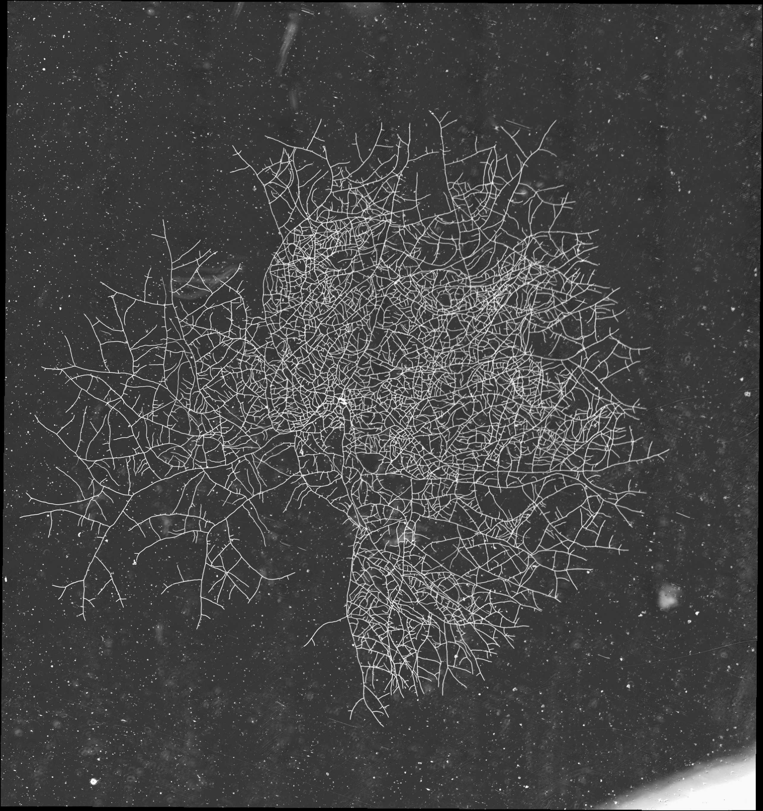
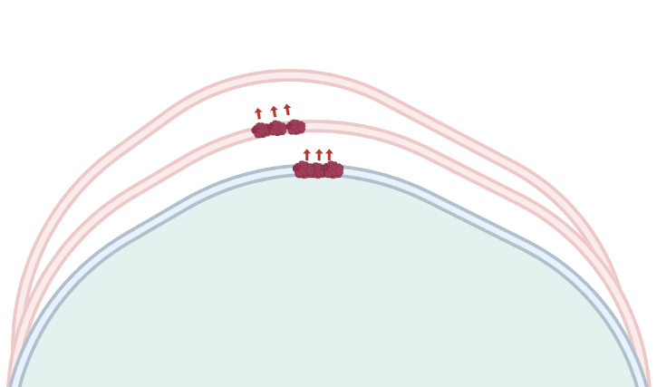
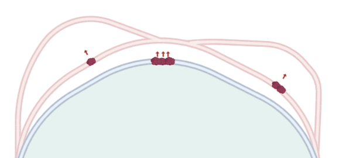
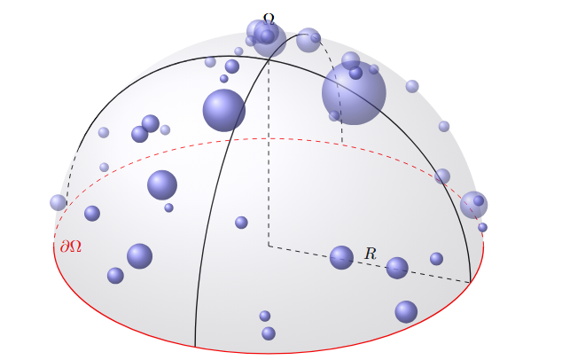
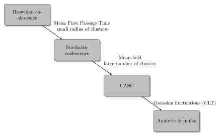

Research
Current postdoctoral research
Rare lineages and the onset of asymptotic population growth
At Inria Saclay, I work with Jakob Ruess on the time needed for a random cell population to reach its long-time growth regime. I study an explicit growth–fragmentation model in which individual growth rates follow Ornstein–Uhlenbeck dynamics and are inherited at division.
The growth–fragmentation PDE describes the population in expectation, where rare lineages with favourable growth histories can carry substantial weight. The central question is when an individual random population reaches its asymptotic regime, and how the rarity of these lineages and the associated timescale depend on the OU parameters: mean growth rate, mean-reversion strength and noise amplitude.
Coalescence
Quantitative convergence to the Smoluchowski equation
With Rémi Catellier, I study the convergence of stochastic coalescence processes to the deterministic Smoluchowski coagulation equation, including singular kernels of the form
\[ K_{\alpha}(x,y) = x^{-\alpha} + y^{-\alpha}, \quad \alpha > 0. \]
The work establishes an O(1/N) convergence rate for expectations of regular observables. The approach uses calculus on spaces of measures and Wasserstein-type distances adapted to the singularity of the kernel.
PhD
Branching in mycelial networks
My thesis at Université Côte d’Azur, supervised by Thierry Goudon and Rémi Catellier, develops a multiscale model of branching in filamentous fungi.


This PhD thesis lies at the intersection of biological modeling and stochastic process theory, focusing on the growth and branching dynamics of filamentous fungi. These organisms form intricate networks known as mycelia, composed of elongated, interconnected cells. Branching, the emergence of new growth tips, is a critical process that shapes the overall network architecture and constitutes the central focus of this work. We propose a mechanistic framework linking small-scale cellular dynamics to the large-scale network structure by describing the behavior of an ensemble of proteins believed to signal branching sites. These proteins diffuse and coalesce upon collision, forming larger aggregates. Branching events occur when two protein clusters together exceed a critical mass threshold, thereby connecting microscopic cluster dynamics to the probability of branching. Although the initial model is explicit, it is analytically intractable; thus, successive approximations are employed to derive explicit formulas and biologically meaningful predictions.

Regular tip extension

Apical branching
From the spatial model to analytical approximations
I model polarisome clusters as particles that diffuse and merge on the surface of the hyphal tip, with mass-dependent diffusivities and interaction radii. The quantity of interest is the probability that at least two clusters exceed a mass threshold at the next calcium pulse—the proposed criterion for apical branching.




- Stochastic coalescence. Mean first-passage-time arguments replace spatial encounters by mass-dependent coagulation rates in the small-cluster-radius regime.
- Cluster-averaged stochastic coalescence. A mean-field approximation simplifies the mass dynamics when many clusters remain, giving tractable conditional mass distributions.
- Analytical branching probabilities. A short-time Gaussian approximation for the number of clusters leads to explicit approximations of the branching probability.
These approximations combine theoretical, heuristic and numerical arguments, with different ranges of validity. Numerical comparisons assess their accuracy against the spatial model.
The singular coagulation kernels arising in this modelling work also motivated my study of convergence rates for observables: a separate theoretical analysis of the stochastic coalescence process and its deterministic Smoluchowski limit.
Optimal transport
Numerical methods for mean field optimal transport
In collaborative work developed through CEMRACS 2022, we study optimal transport problems with mean field interactions and prescribed terminal distributions. We investigate three approaches based on neural networks: learning a control directly, solving a forward–backward PDE system, and a primal–dual formulation.